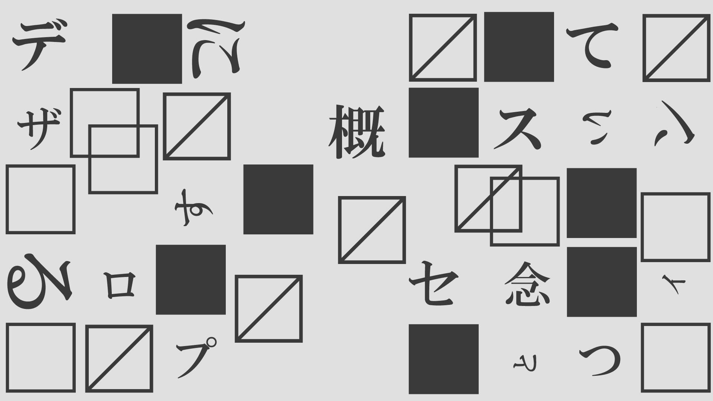

11月30日の講師
歴史、背景とデザイン
岡田 太郎
グラフィックデザイナー、アートディレクター
京都名或大学で歴史学を専攻し、その後、美術史とデザインの関係について研究するために修士課程に進む。
その後、デザインスタジオ「Heritage Design Studio」の立ち上げに携わる。
歴史と背景に根ざしたデザインの価値を探求し、
過去の文化や芸術の要素を現代のデザインに取り入れ、新たな視点から解釈し直すことによって、歴史的な価値を再評価している。
また、大学での助教授としても講義をしており、学生たちに歴史の重要性を理解し、その知識をデザインプロセスに活かす方法を教えている。
京都名或大学で歴史学を専攻し、その後、美術史とデザインの関係について研究するために修士課程に進む。
その後、デザインスタジオ「Heritage Design Studio」の立ち上げに携わる。
歴史と背景に根ざしたデザインの価値を探求し、
過去の文化や芸術の要素を現代のデザインに取り入れ、新たな視点から解釈し直すことによって、歴史的な価値を再評価している。
また、大学での助教授としても講義をしており、学生たちに歴史の重要性を理解し、その知識をデザインプロセスに活かす方法を教えている。